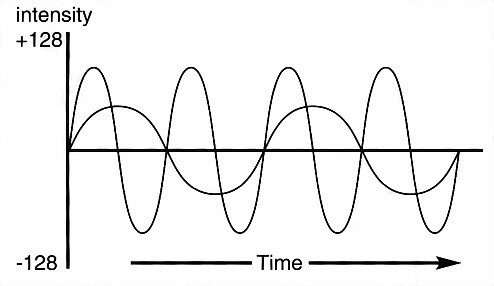

The following program shows how the sort of wave form in the above diagram could be created The wave form is then assigned to a wave and played, which is explained a little later.
E> S$=" " : Rem Clear wave form string
For W=-128 To 127
X=W : If X<0 Then Add X,256
S$=S$+Chr$(X)
Next W
Set Wave 2,S$
Wave 2 To 15: For S=10 to 60: Play S,10: Next S
The wave forms of musical instruments are much more complicated than the last example, but they are not too difficult to reproduce. By combining several sine waves together, with each sine wave having a different starting point, the type of pattern shown in the next diagram is achieved.
This sort of wave form generates smooth harmonics, which can then be used as the "templates" for musical notes, and the sort of routine in the next example can produce typical sine waves:
E> SHAPE$=" " : Degree
For S=0 To 255
V=Int((Sin(S)/2+Sin(S*2+45)/4)*128)+127
SHAPE$=SHAPE$+Chr$(V)
Next S
Set Wave 2,SHAPE$ : Wave 2 To 15
For N=10 To 60: Play N,10 : Next N
WAVE
instruction: assign a wave to sound channel
Wave number To voices
The WAVE command is used to assign the specified wave number to one or more sound channels.